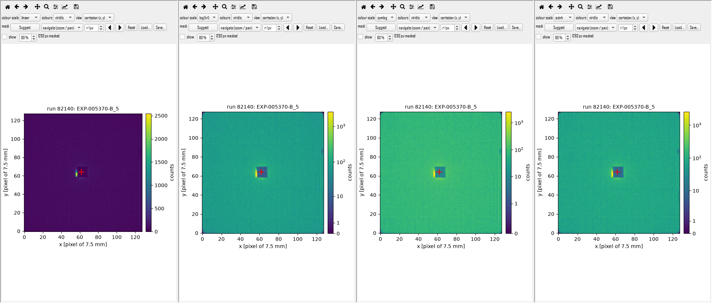
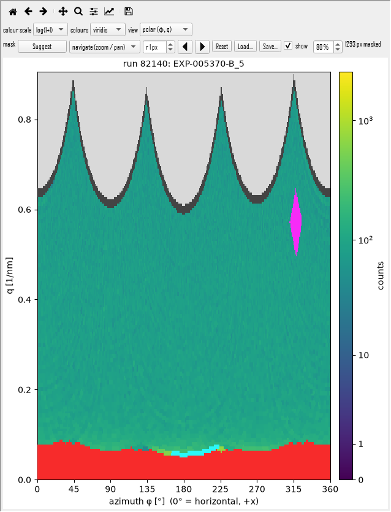
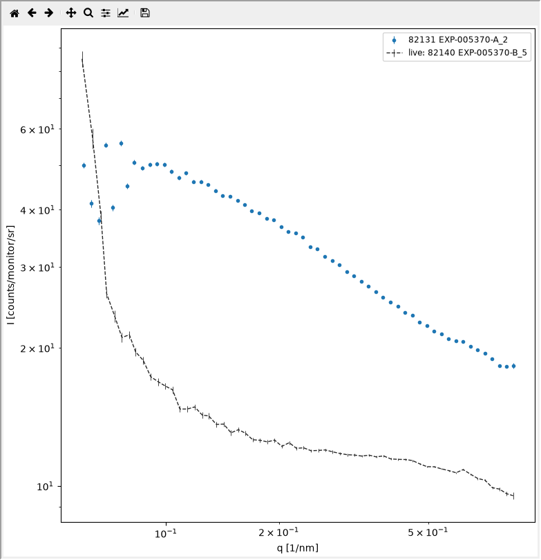
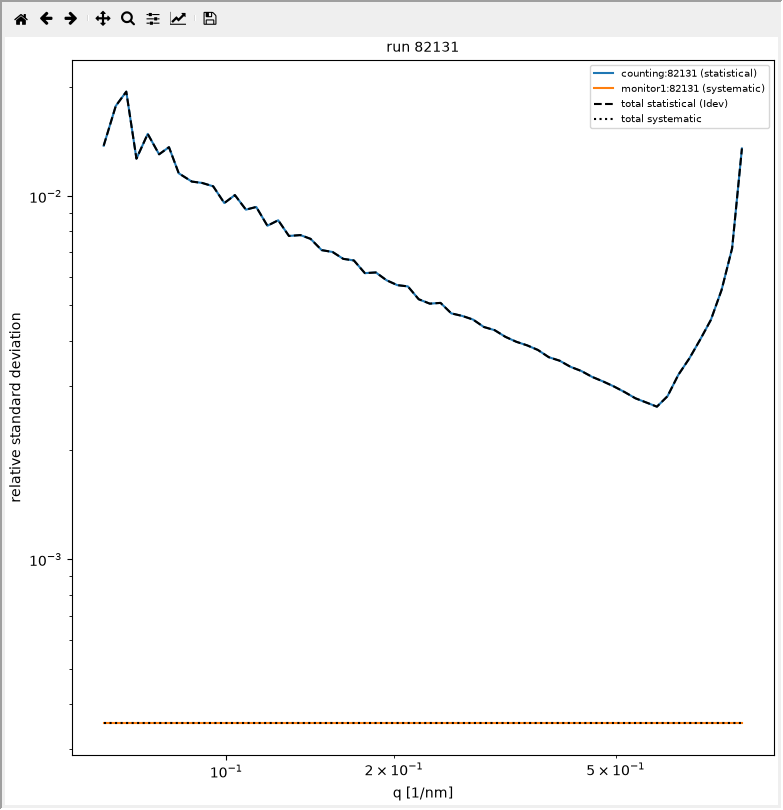

Using the pySASred window
Start it with pysasfit-sasred [raw-data folder] or open the pySASred tab of pysasfit-gui. Every panel
(Runs, Reduction, Detector, I(q), Error budget, Log) can be moved, stacked as tabs or detached into its own
window by its title bar; View shows hidden panels again and View → Reset layout restores the start
arrangement.
A first reduction
Choose the raw-data folder: Browse… in the Runs panel (or File → Open raw-data folder…). The table lists every
sans<year>n<run>.hdfwith sample name, wavelength, collimation coll, SD, beam stop (type and x, y position in mm), attenuator, monitor 1, counting time, total counts and whether the run was aborted (monitor preset not reached). Aborted runs are shown in red. Runs without usable data – measuring time 0, 0 counts on the detector (all banks) or the normalising monitor at 0 – and unreadable files are skipped: grey and struck through, with the reason in the column comment (e.g. “skipped: measuring time 0 s, 0 counts, monitor2 0”). They are left out of the plan and the reduction table, never selected by Add many samples, cannot be ticked in the run list of a row, and a reduction that is given one anyway leaves it out and says so in the log. The filter field below the folder selects runs by sample name or run number.Beam centre: every geometry (collimation coll, detector distance SD and wavelength) has its own beam centre, because q and the solid angle of each pixel are computed from it, gravity moves the beam with SD and λ and the collimation changes the beam. When the folder is read, the centre of each geometry is taken from its direct-beam runs (beam stop out of the beam; median of their masked centres of gravity); a geometry without a direct-beam run borrows the centre of the same wavelength, preferably the same collimation, at the nearest distance, and says so. Selecting a run shows the centre of its geometry in the x / y fields. From selected run (direct beam) determines it again from the selected run and keeps it for that geometry; values typed into x / y are kept for the geometry of the run shown. The centre is the masked centre of gravity, re-centred until it moves by less than 0.1 pixel; the label shows its statistical uncertainty (about 0.004 pixel for the Vifor runs) and where it comes from. Runs of different geometries are reduced separately (one geometry per Reduce selected), each with the centre of its geometry. Pixel indices count from 0, as in Python and GRASP: x (column) is axis 1 (horizontal), y (row) is axis 0 (vertical) of the stored image. The raw columns run to the right as seen from the sample, i.e. towards lab −x; all images are shown as seen looking towards the sample (lab +x to the right, Axis and angle conventions), so the column index grows to the left.
Mask: a new image starts with the standard mask (two outer rows and columns) and a first-guess square beamstop around the beam centre. Adjust it with the mask tools, or click Suggest in the detector panel: it replaces the guess by the rectangle around the beamstop shadow and adds hot pixels found in the image shown. See Masks for editing, loading and saving.
Look at I(q) on the fly: with live I(q) of the selected run switched on (the default), the radial average of the selected run is drawn as a dashed curve in the I(q) panel and follows every change of the beam centre, mask, q range, binning, normalisation or sector within a fraction of a second. It is not kept.
Reduce selected reduces every selected run with the current settings (the file is read again, with its checksum) and keeps the result: it appears as points with error bars in I(q) – vertical Idev and, when the resolution is known (direct beam or collimation estimate), horizontal Qdev (1 σ); I error bars and q resolution bars above the plot switch them on and off – and in the list Reduced runs. Clear curves removes them.
Save: NXcanSAS… or ASCII… for the run chosen under Reduced runs, All… for every reduced run (both formats, file names
<run>_<sample>.h5/.dat). See Scripts and output files for the content of the files.
The reduction table
The Reduction table panel (a tab next to I(q), Error budget and Log; menu Reduction → Reduction table brings it to the front, Reduction → Add many samples… opens the two-step selection directly) has one tab per geometry (detector distance, wavelength, collimation). Each tab holds the correction data (Cadmium, Water, Water-BG = empty cell of the water, Sample-BG, Direct beam = the empty-beam transmission runs of the geometry; the column Use switches the optional ones – Cadmium, Water-BG, Sample-BG – off) and one row per sample, with transmission, thickness, attenuation factor A and scattering probability p_cS, as in the BerSANS data-reduction window.
When a folder is opened the panel is filled automatically (preference fill the reduction table when a folder
is opened; Fill from runs does it again): the runs are grouped by metadata, the roles come from the sample
names, repeated runs are compared (check repeated runs, about 3 s for the Vifor folder) and outliers are
switched off; transmissions come from trans.txt in the folder when present. The tab title gives the number of
scattering runs; a geometry with few runs or without water / empty cell is marked with ? — often a geometry
measured for tests. Remove geometry (or the × of its tab) takes it out of the reduction completely, also
when the table is filled again; the raw files are not touched and Restore removed brings it back. With the
Vifor data: SD 8 m (91 runs), 2 m (58 runs) and 3.9 m (1 run, marked ?).
Each geometry tab has three tabs of its own on the left (labels read upwards): Correction data (Cd, water, water background, sample background, direct beam), Absolute scale (method, efficiency map, direct beam, g(λ)) and Sample data (the sample rows), so each gets the whole page. The left tab chosen is kept when switching geometries; a left tab with something missing has a dark red label, and a double-click in Missing input opens the right one.
New geometry (by hand) adds an empty tab for a table filled completely by hand; every cell of Information, Transmission, Thickness, Attenuator and Probability can be typed, Copy to all samples below / above copies the value of the selected cell. Add many samples… in a tab starts with the search conditions of that geometry (scattering runs, SD, λ and coll within 1–2 %). Save… / Load… keep all tabs and the removed geometries in one JSON file next to the data.
The button in the first column of a row opens its runs as a spreadsheet: use (summed or not), run, sample,
kind (scattering / transmission), SD, start time, counting time, monitor, counts per monitor and a comment that
says why a run is left out (outlier with its χ²/ndf against the others and its scale factor, aborted with the
time or monitor reached, beam stop position not matching the image). Outliers are red, aborted runs orange.
Runs are switched on or off with the check box, added by number (82187, 82190-82195), and show other runs of
this sample lists the runs of the same sample from other groups (e.g. another changer position). Rows whose
runs need a decision (drift, shape change) say so in red in Notes; the line below the tables lists what is
still missing (e.g. no water, a sample without transmission), and missing inputs are red in the table (see
Missing input below). Save… / Load… keep the table as JSON next to the data.
Choosing the runs of any row by hand (corrections, transmissions, samples): in the same spreadsheet list all runs of this geometry adds every scattering run of the geometry (tab Scattering runs) and every transmission run of the wavelength (tab Transmission runs), not ticked; tick the runs that belong to the row and untick the others, the filter field narrows the list by sample name or run number. Transmission from the ticked transmission runs recomputes τ (beam spot, each run against the empty beam of the same distance, same attenuator preferred) and shows the value of every run; OK takes it over. When the transmission runs of a row disagree by more than 3 %, the table says so (“decision needed: the transmission runs disagree”).
Missing input: red cells and the panel Missing input
Inputs a reduction needs but does not have are red in the table: the cell (transmission, thickness, summed runs) or, for a correction row without runs, its button; the tooltip says what the reduction does instead (T = 1, d = 1 cm, no Cd subtracted, relative scale …). Orange marks inputs to check, e.g. an aperture given for the samples but not for the water. The colours follow every edit, before anything is reduced.
Optional corrections: Cadmium, Water-BG and Sample-BG may have no runs, or be switched off with the tick in the column Use (their runs stay in the row). The reduction then simply leaves them out and says so; they are not red. Without water (direct beam or relative scale) the water background is not asked for at all.
The panel Missing input (a tab next to Log; its title gives the number) lists what is missing for every geometry, without reducing: it is filled when the folder is read, again whenever a table is edited, and by Reduction → Check all geometries. Each line gives the geometry, the row, the input and what the reduction would do. Besides the cells of the tables (runs, transmissions, thickness, aperture, absolute scale) it lists:
the resolution: no direct beam – divergence estimated from the collimation (or calibrated on another distance) or no resolution at all; dλ/λ missing in the file (default of the preferences used);
the beam centre taken from another geometry (no direct beam);
an efficiency map chosen that cannot be used (file not found, or a geometry without water);
correction runs at another selector tilt than the samples.
Geometry tabs with something missing have a dark red title and the count in their tool tip; the log has a one-line summary (“check of 3 geometries: …”). A reduction keeps this list and adds what it finds itself (rows that could not be reduced are dark red); its log lists the lines of the geometry reduced. Optional corrections left out are grey and not counted. Double-click a line to jump to its cell in the reduction table.
Absolute scale: water or direct beam + efficiency map
The left tab Absolute scale of every geometry tab chooses the method: automatic (the direct beam as soon as an efficiency map is chosen – the water of the geometry is then not used and its rows are grey –, else water when the Water row has runs, else relative), water, direct beam + efficiency map or relative; used says which one applies. For a long distance without water:
The row Direct beam holds the empty-beam (transmission) runs of this geometry, filled automatically; its button opens the runs as for every row.
efficiency map: water of <geometry> makes the map from the water, water background and Cd rows of that geometry (usually a shorter distance; kept for the session), or file… reads a saved map or an efficiency archive. Show draws it in the detector panel.
Optional: mask the pixels the map only estimates, the direct beam radius (mm; empty = automatic) and the attenuator transmission of the direct beam (empty: the water calibration of the instrument file at this wavelength if there is one, else the nominal value – shown as the grey placeholder).
The log of every reduction gives Φ, the disc, the attenuator factor and the map used (see Reduction steps).
Wrong sample names: names and roles by hand
The roles (water, empty cell, Cd, empty beam, sample) and the grouping follow the sample names in the files. When
a name is wrong — two cells swapped, a remeasurement with a long explanatory name — select the runs in the run
table and use Sample names and roles… (button below the run table, or the right mouse button): give the
correct sample name and, if needed, the role (otherwise the role follows the new name: H2O, water → water,
EC → empty cell, …). Do it for the scattering and the transmission runs of that sample. The raw files are
not changed; the corrections are kept for the folder (sasred_names/ next to the preferences file), applied
every time the folder is opened (listed in the log), shown in blue italics in the run table (tooltip: the name in
the file), and the reduction table is filled again. Reset name and role to the file undoes it for the selected
runs.
Time series of one sample. To follow a sample in time (kinetics, gelation, a temperature jump), measure many short runs and reduce them one by one instead of summed: select a cell of the sample row and click Time series… (below the sample table). Choose
the first and last run of the series (the runs in between are ticked, the others not; excluded runs are left out anyway);
time zero t₀, e.g. the moment of mixing (
YYYY-MM-DD hh:mm:ss); empty: the start of the first run;runs per point (consecutive runs summed per point, 1 = every run) or a time window in seconds.
The Number column then shows “series: n” in bold blue. A reduction gives one result per point, named
“SD 8.0 m No. 3 t=540s”, reduced with the same corrections as a summed row (transmission and thickness of the
row). The time of a point is the monitor-weighted middle of its runs relative to t₀; it is written into the
output files with the start and end of the point (time_s, time_start, time_end, series, series_t0,
series_index), so pyTOOLbox can order the curves by time_s (e.g. its series plot). I(q) shows the points of
one series coloured by time with a colour bar. Untick reduce … as a time series to sum the runs again.
Runs with many frames (time scans in one file) will give the points in the same way later.
Excluding runs. Runs that must not be used — the sample preparation failed, the sample phase-separated during
the measurement, … — are excluded with Exclude… (next to Sample names and roles…, or the right mouse button):
select them, give the reason. They stay in the run list, grey and struck through, with “skipped: excluded by
hand: sasred_names/), so it survives Rescan and the next start, and is
listed in the log when the folder is opened. Include runs again (right mouse button) takes it back.
Example (SANS-LLB, Maren 2026-08): at 4 m the runs named “H2O” (5252, 5256, 5261, transmission 5276) are D2O →
name D2O, role sample; the real water 5278–5280 (“real H2O, the other position is D2O …”) → name H2O, role
water.
Add many samples
Add many samples… works in two steps, as Select many samples in BerSANS
(pysasfit.sasred.selection):
Select runs: a run range (All available resets it), optionally a pattern (starting with the first run, alternately use n runs and skip m), and conditions on header items checked in the list: text items are equal to the value or, with Regular expressions, match it as a whole (
EXP-.*); numbers lie infrom ≤ value ≤ to. The list holds the named items (sample, SD_m, coll_m, wavelength_A, attenuator, sample_position_mm, thickness, …, kind = scattering / transmission) and every scalar entry of the raw files as file:, with the value as stored (e.g. file: SANS/Dornier-VS/lambda in nm), so any sample environment written to the file (temperature, field, pressure, shear rate) can be used. Search and accept lists the selected runs on the second page. Group: check the items that define a sample and give each number a ± tolerance (empty or 0: equal values; text items always equal). All runs of a group lie within ± tolerance of the centre of the group. The table below shows the groups as they will be added; check the repeated runs of every group compares the runs of each group and switches outliers off with their reason. Add n samples appends one sample row per group, with the transmission from
trans.txtand the transmission runs of the same sample and wavelength.
With the Vifor data, sample EXP-.*, λ 0.59–0.61 nm, attenuator 0, collimation 8 m and SD 1.99–2.01 m select
the same 52 runs as BerSANS; grouped by sample they give 30 samples, 31 with sample_position_mm ± 0.25
(A_2 was measured at two changer positions).
The Reduction panel
field |
meaning |
|---|---|
x (axis 1), y (axis 0) |
beam centre in pixels, from 0 |
beamstop |
shape (square or disc) and half width / radius of the first guess of the beamstop in the mask of a new image; it follows the beam centre until the mask is edited; Into mask puts it into an edited mask |
number of bins, spacing |
q bins between q min and q max, logarithmic (constant Δq/q) or linear; empty bins are dropped |
units |
nm, 1/nm (default) or Å, 1/Å for wavelength and q, in the table, the fields, the plots and the saved files. Switching converts q min / q max |
q min, q max |
limits of the binning; auto takes the q range of the unmasked pixels |
normalise by |
monitor 1 (its Poisson error is propagated) or counting time |
sector average |
only pixels within ± half width of the sector centre φ (and of φ + 180°) are averaged. φ = 0 is the horizontal direction +x (to the right in the image), counter-clockwise (Axis and angle conventions; before 2026-11-23 an oblique sector at φ was the present 180° − φ). The sector boundaries are drawn in the detector image |
live I(q) of the selected run |
the on-the-fly radial average described above |
The start values of these fields (except the beam centre) are in Settings → Preferences → SANS reduction; the window itself remembers the last values, the folder, the units, the detector-panel choices, the masks, the beam centres set by hand or fitted to a run, the reduction tables with every change made by hand (absolute scale, efficiency map, direct beam, switched-off rows and runs, transmissions and thicknesses typed in) and the panel layout (the last session). On first start the three columns get widths in proportion to the window (on a laptop of 1600 × 1000 about 340 | 790 | 470 pixels); panels with many controls scroll instead of widening the window, and rows of buttons wrap, so pySASred fits screens down to 1366 × 768. The session is written when the window or the launcher closes and every two minutes, so a launcher that is killed loses at most two minutes. The tables are restored only for the same raw-data folder. Settings → Forget last session in the launcher clears it.
Reading the folder again (new runs) or correcting sample names refills the tables from the files, but keeps per geometry what was set by hand: the absolute-scale settings, and per row (corrections by role, samples by name) the runs switched off, transmissions typed in, and thickness, aperture, attenuator and notes; the log lists what was kept. Beam centres set by hand or fitted to a run are kept as well (kept: set before in the log); only the automatic direct-beam centres are determined again.
The detector panel

Colour scales of the detector image: linear, log(1+I), symlog and asinh (run 82140).
colour scale: linear; log(1+I), where zero-count pixels stay finite and small counts are spread out (the default); symlog, linear below 1 count and logarithmic above, which also shows negative values (after a subtraction); asinh, a smooth version of symlog. The colour bar is labelled 0, 1, 10, 10², … for the non-linear scales. The colour range comes from the unmasked pixels only.
colours: the colour map.
÷ efficiency, ÷ solid angle: the raw image divided by the efficiency map shown (pixels without an estimate blank) and / or by the solid angle of every pixel (counts per sr, with the beam centre of the geometry); the colour bar gives the unit. Both work in the cartesian and the polar view.
efficiency map: Make from the water of → one entry per geometry with water runs (its reduction-table rows Water, Water-BG and Cd, its mask and beam centre; for SANS-LLB the detector bank chosen in the panel); Make from the water of the shown geometry (the geometry of the selected run, else the reduction-table tab shown); Load…, Save the shown map…, Archive the shown map (efficiency archive of the preferences) and Show. If a map cannot be made (no water in that geometry, no water transmission, …) a message box says why. The view efficiency map draws the shown map around 1 (blue below, red above), the pixels it only estimates (row × column, e.g. behind the beam stop) outlined, undefined pixels grey; the title gives its water runs, distance, wavelength, rms and median σ.
view: cartesian (x, y), the detector as measured, seen looking towards the sample (lab +x to the right, Axis and angle conventions), drawn with the true aspect ratio of the pixels (from
x_pixel_size/y_pixel_sizeof the file) and flush left in the panel; or polar (φ, q): azimuth φ horizontally (0° = +x = right in the cartesian view, counter-clockwise, as for the sector), q vertically. In the polar view isotropic rings become horizontal bands and anisotropy shows as waves along φ; each (φ, q) cell takes the value of the pixel under its centre (no interpolation), cells outside the detector are light grey.axes (cartesian view and SANS-LLB: all detectors): pixels, angle 2θ or q_x, q_y. In angle or q every pixel is drawn at 2θ·(cos φ, sin φ) [°] or |q|·(cos φ, sin φ) [q unit shown] with the beam centre of the geometry (φ = 0 along +x), so rings are circles at their 2θ or q; on SANS-LLB the central detector and the panels sit at their true places. Masks are shown, but edited in pixels.

Polar view of run 82140: the beamstop shadow (red) at the bottom, the drawn rectangle (magenta) as a narrow spot near φ = 315°, the leaking pixels at the beamstop edge (cyan) near φ = 180°, the detector corners as the four peaks at 45°, 135°, 225° and 315°.
The rows of controls above the plot wrap when the panel is narrow, so the panel can be made small and the I(q) panel large.
I(q), error budget and log

I(q) of the reduced run 82131 (points with Idev) and the live curve of the selected run 82140 (dashed). The strong rise of 82140 at the lowest q comes from the beam leaking past the beamstop edge (see Masks).
Error budget shows, for the run chosen under Reduced runs, the relative standard deviation that every source contributes at each q, and the totals of the statistical (Idev) and the systematic sources. For a sample run the counting statistics dominate; the monitor is a systematic scale common to all points (a horizontal line).

Log lists the beam-centre determinations, every reduction with its q range and dead-time factor, the notes of each reduction (for example “deadtime:detector: uncertainty unknown, not propagated” or “Qdev: wavelength, beam divergence … from the direct beam …”), the mask suggestions and the saved files. When a folder is opened the log lists the beam centre and the beam profile of every geometry. The profile line gives the beam widths σx, σy in mm, the divergence σθ (also as FWHM) in mrad, the fitted centre, the runs used and the χ² of the fit. A geometry without a direct-beam run gets the warning “no direct-beam measurement – beam divergence estimated from the collimation” with the estimated widths; its reductions use that estimate and appear in the panel Missing input. Variable names: coll is the collimation length and SD the sample–detector distance throughout pySASfit (files written before November 2026 with L1 / L2 are still read).
In the launcher
In pysasfit-gui the window is the first tab. Its own menus are hidden there; their entries appear in the
launcher’s File menu (Open raw-data folder…, Save NXcanSAS…, Save ASCII…, Save all reduced runs…) and
View menu. The tab can be detached into its own window, which shows its own menus again (see
The launcher: all tools in one window).
Sample positions and transmissions
The reduction table matches transmissions by sample name and sample position (changer position of the
runs, 1 mm): transmission runs and trans.txt values of another position are not used, the notes say so.
Without a usable trans.txt value the transmission is computed from the transmission runs at that position
against the nearest empty-beam transmission run (beam spot τ); when trans.txt disagrees with the runs
(more than 5 σ and 0.01), the value of the runs is used and the notes show both. A sample whose position is
that of another sample measured at the same time (within 5 mm) is marked decision needed (“changer not
moved or wrong sample name?”), and a sample measured at several positions is listed with them.
Vifor September 2026: “EXP-005370-A_2” was first measured at 3.0 mm (runs 82060, 82063, 82080, 82097), which is the slot of A_1 (0.3 mm; slots are 29 mm apart): transmission 0.2355 and scattering identical to A_1. It was measured again in its own slot at 29.3 mm (82114, 82131, 82148): transmission 0.4177 (trans.txt: 0.2966).